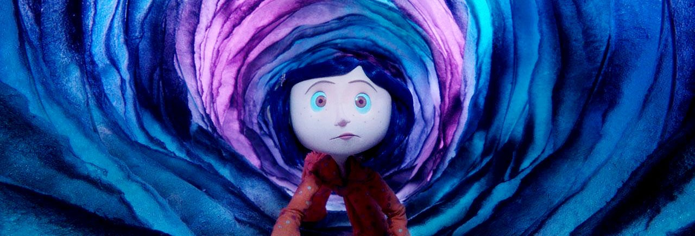
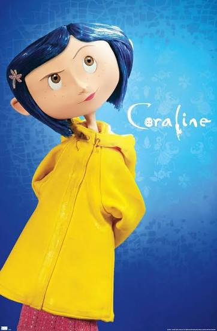

Lore is the collection of stories, history, beliefs, and events that build the deeper world behind a fictional story. It can explain where characters come from, why certain events happen, and what happened before or beyond the main plot. In Coraline (2009), the lore creates a mysterious world that goes beyond Coraline's adventure.The film follows Coraline Jones, a young girl who moves with her parents into the Pink Palace Apartments. Feeling bored and ignored by her parents, Coraline discovers a small door in her home. Behind it, she finds a strange passage leading to a parallel version of her world. At first, the Other World appears better than reality. However, Coraline eventually learns that this world is a trap.
The Other Mother, also known as the Beldam, is the main supernatural figure in the film. She is a creature capable of creating a false version of reality and transforming herself to manipulate children. Her button eyes symbolize the control she wants over her victims. She offers Coraline an idealized life, but only if Coraline agrees to have buttons sewn over her eyes.
The Beldam's history is never completely explained, which is an important part of the film's lore. The movie suggests that Coraline is not her first victim. This establishes that the Beldam has been repeating the same pattern with children before Coraline arrived.
Ultimately, the lore of Coraline is built around the contrast between temptation and reality. The Beldam creates a seemingly perfect world to hide her true intentions, while Coraline learns to appreciate reality despite its imperfections. The unexplained history of the Beldam and the Other World makes the film feel like only one chapter in a much larger, darker story.